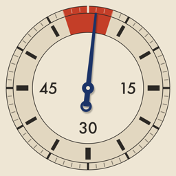
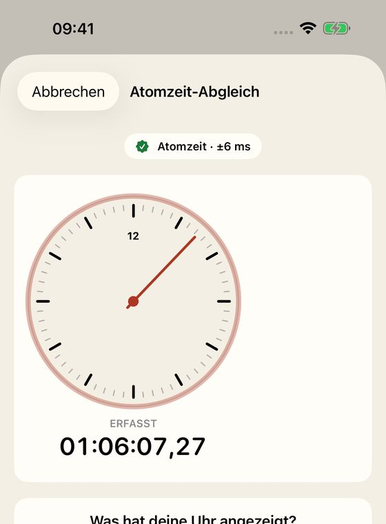
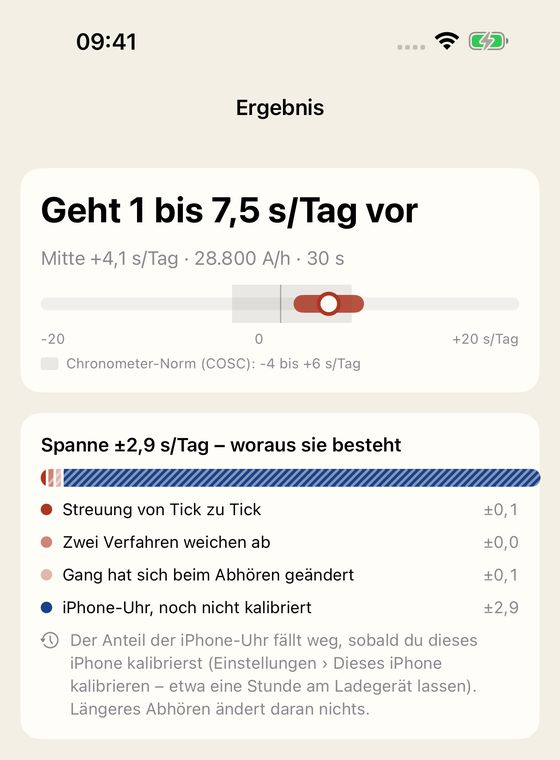
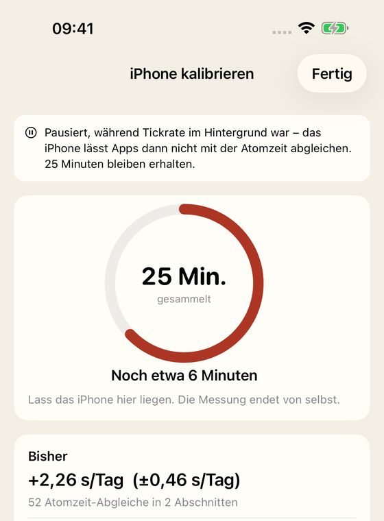

Tickrate
Wie viele Sekunden am Tag geht deine mechanische Uhr vor oder nach?
Tickrate ist eine iPhone-App, die dir sagt, wie viele Sekunden am Tag deine mechanische Uhr vor- oder nachgeht.
Sie vergleicht die Uhr im Abstand von einigen Stunden oder Tagen mit der Atomzeit und ermittelt so die tatsächliche Gangabweichung. Für eine schnelle Schätzung kann sie das Ticken auch über das Mikrofon des iPhone abhören; das Ergebnis wird immer als Spanne angezeigt.
Eine Uhr ist kostenlos, mit beliebig vielen Abgleichen und Abhör-Messungen; ihr Verlauf zeigt die letzten 30 Tage. Tickrate Unlimited, ein einmaliger Kauf (7,99 US$ in den USA), schaltet alle Uhren, den vollständigen Verlauf sowie Export und Import frei.
Bald im App Store
So funktioniert’s
Abgleich mit der Atomzeit: der tatsächliche Gang
Öffne eine Uhr und tippe auf „Abgleich“. Tickrate zeigt die Atomzeit an; du tippst in dem Moment, in dem dein Sekundenzeiger die 12 erreicht. Gleiche Stunden oder Tage später erneut ab, und Tickrate legt eine Gerade durch deine Abgleiche: Ihre Steigung ist die Gangabweichung pro Tag, mit Spanne. Abgleiche im Abstand von einem Tag ergeben etwa ±0,4 Sekunden pro Tag, im Abstand von einer Woche deutlich weniger.

Abhören: eine schnelle Schätzung
Halte in einem ruhigen Raum die Unterkante deines iPhone 20 bis 60 Sekunden lang neben der Krone an das Gehäuse der Uhr. Tickrate misst das Ticken auf zwei voneinander unabhängige Arten und zeigt den Gang als Spanne an, zusammen mit dem, woraus sich die Spanne zusammensetzt. Wenn die beiden Methoden nicht übereinstimmen, zeigt es keine Zahl an und sagt, warum.

Dieses iPhone einmal kalibrieren
Der Audiotakt jedes iPhone läuft etwas zu schnell oder zu langsam, und das verschiebt jedes Abhören. Lass Tickrate etwa eine Stunde lang am Ladegerät geöffnet: Es misst dann den Takt deines iPhone gegen die Atomzeit und korrigiert jedes spätere Abhören.

Drei Wege, die Gangabweichung deiner Uhr zu ermitteln
| Tickrate (iPhone-App) | Zeitwaage | Manueller Vergleich mit einer Referenzuhr | |
|---|---|---|---|
| Was du brauchst | Ein iPhone | Ein eigenes Messgerät mit Kontaktmikrofon | Eine genaue Uhr, ein Notizbuch und Geduld |
| Kosten | Kostenlos für eine Uhr (Abgleiche und Abhören unbegrenzt, Verlauf der letzten 30 Tage); einmaliger Kauf für mehr | Der Preis des Geräts | Kostenlos |
| Genauigkeit | Abgleiche im Abstand von einem Tag: etwa ±0,4 s/Tag. Abhören: eine Spanne von etwa ±0,5 bis ±1 s/Tag bei sauberem Signal nach dem Kalibrieren des iPhone, vorher etwa ±3 s/Tag | Hängt vom Gerät ab | So gut, wie du den Sekundenzeiger abliest, verteilt auf die Tage zwischen den Ablesungen |
| Zeitaufwand | Zweimal tippen, Stunden oder Tage auseinander; oder 20 bis 60 Sekunden abhören | Etwa eine Minute pro Lage | Tage |
| Was du erfährst | Gangabweichung pro Tag (Durchschnitt beim Tragen oder per Abhören für den Moment) | Gang, Amplitude und Abfallfehler je Lage | Durchschnittliche Gangabweichung pro Tag |
Die Genauigkeitsangaben zu Tickrate stammen aus unseren eigenen Tests (siehe Quellen). Für Zeitwaagen nennen wir keine, weil sie vom Gerät abhängen.
Was Tickrate nicht kann
- Zum Abhören brauchst du einen ruhigen Raum, und das iPhone muss das Gehäuse berühren. Manche Uhren ticken zu leise für ein Handymikrofon.
- Quarzuhren und andere elektronische Uhren lassen sich nicht abhören. Der Abgleich mit der Atomzeit funktioniert mit jeder Uhr, die einen Sekundenzeiger hat.
- Abhören liefert eine Schätzung des Gangs in diesem Moment und in dieser Lage. Die tatsächliche Gangabweichung pro Tag ergibt sich aus Abgleichen mit der Atomzeit über einen Tag oder länger.
- Tickrate misst nur den Gang, nicht Amplitude oder Abfallfehler.
- Solange du dein iPhone nicht kalibriert hast (etwa eine Stunde am Ladegerät), sind die Spannen beim Abhören breiter.
- Nur für iPhone, ab iOS 17.
Fragen
Kann man mit dem iPhone messen, ob eine mechanische Uhr vor- oder nachgeht?
Ja. Tickrate macht das auf zwei Arten: Der Vergleich mit der Atomzeit im Abstand von einigen Stunden oder Tagen ergibt die tatsächliche Gangabweichung, bei Abgleichen im Abstand von einem Tag auf etwa ±0,4 Sekunden pro Tag genau. Wenn du das Ticken 20 bis 60 Sekunden lang abhörst, bekommst du eine schnelle Schätzung des aktuellen Gangs, angezeigt als Spanne.
Wie kann ich die Ganggenauigkeit meiner Uhr ohne Zeitwaage prüfen?
Vergleiche sie zu zwei Zeitpunkten mit einer genauen Uhr und teile die Differenz durch die Zeit dazwischen. Tickrate nimmt dir das ab: Es zeigt die Atomzeit an, du tippst, wenn dein Sekundenzeiger die 12 erreicht, und nach dem zweiten Abgleich zeigt es die Gangabweichung in Sekunden pro Tag. Deine Reaktionszeit ist jedes Mal ungefähr gleich, deshalb hebt sie sich größtenteils auf.
Wie viele Sekunden Abweichung pro Tag sind bei einer mechanischen Uhr normal?
Üblich sind einige Sekunden bis einige zehn Sekunden pro Tag, je nach Werk. Ein zertifizierter Chronometer muss in der COSC-Prüfung im Mittel zwischen −4 und +6 Sekunden pro Tag liegen. Verbreitete günstige Automatikwerke sind lockerer spezifiziert: das NH35 von Seiko zum Beispiel mit −20 bis +40 Sekunden pro Tag. Lage, Aufzugszustand und Temperatur verändern den Gang um Sekunden pro Tag, eine einzelne Messung ist also nur eine Momentaufnahme.
Wie genau ist die Messung über das iPhone-Mikrofon?
Etwa ±0,5 bis ±1 Sekunde pro Tag: So breit ist die Spanne nach 30 Sekunden Abhören bei sauberem Signal einer modernen Uhr, sobald der Takt des iPhone selbst kalibriert ist. Der Audiotakt jedes iPhone läuft etwas zu schnell oder zu langsam (bei dem iPhone, das wir gemessen haben, um etwa 2 Sekunden pro Tag). Deshalb macht Tickrate vor dem Kalibrieren jede Spanne auf etwa ±3 Sekunden pro Tag breiter, statt diesen Fehler zu verstecken. Diese Werte stammen aus unseren Tests mit Aufnahmen echter Uhren und synthetischem Ticken, nicht aus Messungen an vielen iPhones.
Warum zeigt Tickrate eine Spanne statt eines einzelnen Werts?
Weil eine einzelne, exakt wirkende Zahl mehr behaupten würde, als kurzes Abhören wissen kann. Die Spanne setzt sich aus dem zusammen, was das Ergebnis verschieben kann: der Streuung zwischen den Ticks, dem Unterschied zwischen zwei unabhängigen Messmethoden, Veränderungen der Uhr während des Abhörens und dem Takt des iPhone selbst. Die App zeigt, wie viel jeder Teil beiträgt, und wenn die beiden Methoden nicht übereinstimmen, zeigt sie gar keine Zahl an.
Was tun, wenn Tickrate meine Uhr nicht hört?
Tickrate sagt es dir dann, zeigt keine Zahl an und nennt den Grund. Versuch es in einem ruhigen Raum, mit der Uhr Zifferblatt nach oben auf einer weichen Unterlage und mit der Unterkante des iPhone, wo das Mikrofon sitzt, am Gehäuse neben der Krone. Wenn Tickrate die Uhr dann immer noch nicht hört, nutze den Abgleich mit der Atomzeit: Er funktioniert mit jeder Uhr, die einen Sekundenzeiger hat, in jedem Raum.
Braucht Tickrate eine Internetverbindung?
Nur für die Atomzeit. Abgleiche und das Kalibrieren des iPhone lesen die Zeit von öffentlichen Zeitservern: zuerst von Apple, von Cloudflare oder Google, falls Apple nicht antwortet. Abhören funktioniert offline, und ohne Verbindung nutzt ein Abgleich die Uhr des iPhone selbst und weist darauf hin.
Nimmt Tickrate Ton auf oder lädt es ihn hoch?
Nein. Das Mikrofon wird nur benutzt, während du eine Uhr abhörst oder das iPhone kalibrierst; der Ton wird auf dem iPhone ausgewertet und nie aufgenommen, gespeichert oder hochgeladen. Es gibt kein Konto. Deine Uhren und Ergebnisse bleiben auf deinem iPhone, und du kannst sie als CSV oder Backup-Datei exportieren.
Tickrate oder Zeitwaage: Was ist der Unterschied?
Eine Zeitwaage misst mehr: Gang, Amplitude und Abfallfehler in jeder Lage, mit einem Kontaktmikrofon; Tickrate misst nur den Gang. Was Tickrate dazu beiträgt, ist der lange Zeitraum: Abgleiche mit der Atomzeit über Tage ergeben den durchschnittlichen Gang, so wie du die Uhr tatsächlich trägst. Wenn du Uhrwerke regulierst oder Amplitude und Abfallfehler brauchst, nimm eine Zeitwaage.
Mit welchen Uhren funktioniert Tickrate?
Der Abgleich mit der Atomzeit funktioniert mit jeder Uhr, die einen Sekundenzeiger hat, ob mechanisch oder Quarz. Abhören funktioniert mit mechanischen Uhren mit den üblichen Frequenzen von 12.000 bis 43.200 Halbschwingungen pro Stunde (A/h), etwa 21.600 und 28.800; Tickrate kann die Frequenz selbst erkennen. Quarzuhren lassen sich nicht abhören.
Was kostet Tickrate?
Eine Uhr ist kostenlos, mit beliebig vielen Abgleichen, Abhör-Messungen und iPhone-Kalibrierungen; Verlauf und Diagramm zeigen die letzten 30 Tage, ältere Einträge bleiben erhalten. Tickrate Unlimited ist ein einmaliger Kauf (7,99 US$ in den USA; die Preise sind je nach Land unterschiedlich), ohne Abo und ohne Konto. Es schaltet alle Uhren, den vollständigen Verlauf, Export und Import sowie das Kalibrieren mit einer Quarzuhr frei und funktioniert mit der Familienfreigabe.
Quellen
- COSC-Chronometerprüfung: mittlere tägliche Gangabweichung −4 bis +6 Sekunden. cosc.swiss
- Genauigkeitsangabe für das Seiko NH35: −20 bis +40 Sekunden pro Tag (Herstellerangabe, wiedergegeben von Caliber Corner). calibercorner.com
- Die Werte von Tickrate (±0,4 s/Tag bei Abgleichen im Abstand von einem Tag, ±0,5 bis ±1 s/Tag bei sauberem Abhören nach dem Kalibrieren, vorher ±3 s/Tag, etwa 2 s/Tag beim Audiotakt eines iPhone): unsere eigenen Tests mit Uhrenaufnahmen, synthetischen Signalen und einem iPhone 17 Pro Max, November 2026.